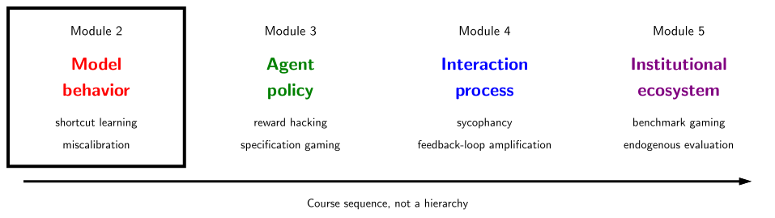
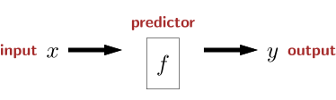
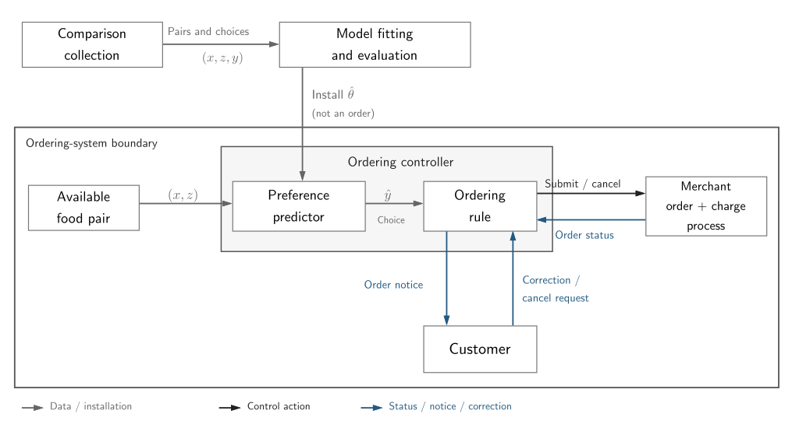

Module 2: From data and objectives to model behavior

In Module 1, we introduced the AI Safety problem, methods for identifying a system and its potential to become hazardous, and what evidence would support an assurance claim. We now turn our attention towards learned predictors as components of those systems. The technical focus here is narrow: we are looking at how a predictor's behavior is shaped by its development system. The safety analysis is going to be broader: we will ask how the predictor's behavior can contribute to harm scenarios in the system.
The classical machine-learning pipeline.
Machine learning is the process of turning data into a model. After learning a model, inference can convert inputs into predictions for downstream tasks. This is an intentionally narrow system boundary, but as will be seen, the setting is rich enough to illustrate several key ideas in hazard analysis and assurance.

Diagram adapted from CS221: Reflex-based models.
A reflex-based model is interchangeable with a predictor function \(f\) that takes some input \(x\) and produces an output \(y.\) The input can represent something simple like a timestamp, or more complicated like a string or an image. However, the output \(y\) is structured and determines the type of prediction task.
One of the simplest prediction tasks is binary classification. We sample inputs \(x \sim X\) from a population distribution \(X\) and feed them into the predictor \(f(x) \in \{-1,+1\}\), which returns a binary label. This simple prediction task can be used for anomaly detection, filtering toxic comments, or classifying input types, e.g., vegetable vs. fruit.
We call the space of possible predictors \(\mathcal{H}\) the hypothesis class and search it using a loss function and an optimization algorithm.
In this course, a particularly compelling prediction task is pairwise preference classification. The input is a pair \((x,z)\), and the goal is to predict which of the two alternatives is preferred.
A Preference Learning Example.
To make the prediction problem concrete we will walk through problem formulation, model specification, learning, and inference. We will also introduce and analyze one hypothetical food-ordering system through the four Systems-Theoretic Process Analysis (STPA) stages from Module 1.
Here is the prediction problem. Fix one customer. Let \(x\) and \(z\) represent two food alternatives, with features that can represent food type, freshness, etc. Labels record this customer's choices in binary-choice experiments. If \(x=\text{Apple}\) and \(z=\text{Spinach}\), let \(y=-1\) denote selection of \(x\) and \(y=+1\) selection of \(z\). Here the intended construct is a preference between food types at comparable freshness. Note that comparisons may instead confound food type with freshness.
STPA stage 1: purpose, harm, hazard, and boundary.
We assume the food-ordering service uses the predictor to purchase one of the two available foods for the customer. The predictor is used to choose a substitute if the customer's originally requested item is unavailable. In deployment, both options have the same price and comparable, acceptable freshness. The customer interface has delegated routine ordering that does not confirm each purchase. The analysis here is scoped to unwanted spending, setting aside food hygiene, dietary restrictions, and changes in preference during an ordering episode.
| Element | Specification for the food-ordering example |
|---|---|
| Purpose | Learn how preference predictions contribute to unwanted purchasing and what could prevent or limit this from happening. |
| Harm \(L_F\) | The customer is charged for the alternative they would reject in favor of the other. |
| Hazard \(H_F\) | A predicted choice can become a nonrefundable purchase without an effective opportunity for the customer to confirm or correct it. |
| Safety constraint \(SC_F\) | Prevent nonrefundable purchase of an order that would contradict the customer's intended choice. |
| Analysis boundary | The predictor, ordering rule, merchant order-and-charge process, and customer notification/correction loop. |
Here and below, \(L_F\), \(H_F\), and \(SC_F\) denote this example's harm, hazard, and safety constraint. The hazard is an upstream condition rather than the charge itself. For example, this hazard does not create a harm if the prediction matches the customer's intended choice.
STPA stage 2: model the control structure.
The ordering controller consists of the preference predictor and a fixed ordering rule. Its working information consists of a predicted customer choice and the merchant's reported order status. It can submit an order or request cancellation. The controlled process is the merchant's order-and-charge process. Submission initiates that process; commitment is the point at which its charge becomes nonrefundable. Availability may be learned from an order-status response, and commitment may delay after submission.

Baseline control structure; customer confirmation before purchase is not yet a control.
In this basic design, the rule submits the predicted choice automatically. If the merchant commits the purchase before the customer receives notice, a later correction cannot prevent the charge.
Learning the predictor inside this system.
We use a train-test split. Suppose there is a source distribution \(S\) over pairwise preference examples, from which we can sample independent and identically distributed (i.i.d.) observations \((x,z,y)\sim S\). We draw a collection of samples to construct a training set \(S_{\mathrm{train}}\), and separately draw a test set \(S_{\mathrm{test}}\) that will be used to evaluate the trained model.
Suppose each alternative is represented in a common feature space, \(x,z\in\mathbb{R}^k\), and consider a Bradley-Terry model with parameter \(\theta\in \Theta\) where \(\Theta := \mathbb{R}^k\). Therefore, the hypothesis space satisfies
The model assigns each alternative a score \(\theta^\top x\), and models the probability that \(x\) is preferred to \(z\) as
Under our label convention, \(y=-1\) corresponds to \(x\succ z\) and \(y=+1\) corresponds to \(z\succ x\). This allows a compact expression for the comparison likelihood
Assuming the training examples are i.i.d., the likelihood of the observed training data is
and the maximum-likelihood estimator is
Equivalently, it is often more convenient to maximize the log-likelihood,
Then we can abstract the particular likelihood, normalize, and obtain
and therefore
Since the objective is differentiable with respect to the model parameters, gradient descent is a popular algorithm. Finally, once we have a fixed model \(\hat \theta\) we can use it to generate preference classifications. There are many ways to convert a probability into a concrete decision \(\hat y(x,z) \in \lbrace -1, +1\rbrace\). For example,
picks the option with the highest predicted probability, breaking ties in favor of \(x\). This is a prediction; the ordering rule separately turns it into a purchase instruction.
STPA stage 3: identify an unsafe control action.
The ordering controller submits an order for \(x\) when the customer's intended choice is \(z\), while the order can become nonrefundable before the customer can correct it. Generalization and stress testing will provide evidence about the predictor's contribution. The next stage will connect that behavior to the rest of the control structure.
Generalization as an assurance claim.
Learning gives us a predictor \(\hat \theta\), but it does not by itself tell us whether that predictor will behave well on inputs that were not sampled during training. This is the role of generalization.
For this section, evaluate classifications using bounded zero-one loss,
where \(\hat y_\theta\) is the inference rule with parameters \(\theta\). This evaluation loss differs from the log loss optimized during fitting. The training, test, and population risks in this section all use this same evaluation loss.
As described so far, the loss of the predictor on the training set is
However, this does not directly tell us anything about the expected loss on the source distribution
which we call the population risk. Since \(S\) is something we can only sample, we instead use \(S_{\mathrm{test}}\) to estimate this quantity:
We cannot use \(\hat R_{\mathrm{train}}\) directly in the same way because \(\hat \theta\) depends on the training data. Indeed, that's how we obtained the model in the first place! A related statement can sometimes be made using \(S_{\mathrm{train}}\), but that requires a separate statistical learning argument about the learning procedure and hypothesis class. However, assuming the test samples really are i.i.d. from \(S\), are independent of the learned predictor, and the evaluation loss is bounded, then \(\hat R_{\mathrm{test}}\) will estimate \(R_S(\hat \theta)\) once \(|S_{\mathrm{test}}|\) is sufficiently large.
Taking the simplest train-test split as the implementation we can now produce the assurance claim:
What does this establish in the ordering system? The model-level claim is about predictions under the population distribution. Connecting model error to the harm \(L_F\) also requires assumptions about the labels and control structure. Under these assumptions the zero-one population error rate equals the probability of \(L_F\) per order.
Note this is not a claim that the assumptions hold for our development data. The actual ordering conditions may be different or an effective confirmation step would change what can be prevented. Freshness-confounded comparisons may not represent the intended ordering conditions. Finally, the loss \(\ell\) is entirely distinct from the potential harms \(L_F\). Even when population risk measures the probability of that harm, it does not by itself establish its (monetary) severity or whether the risk is acceptable given the intended (number of orders) exposure.
STPA stage 4: identify a harm scenario.
A freshness shortcut could contribute to an unwanted purchase in four steps:
- Development comparisons confound food type with freshness, allowing the freshness-based rule to perform well on recorded choices.
- In an ordering episode requiring a substitute, both foods are fresh and the customer would choose spinach. The pair is presented as \(x=\text{Apple}\) and \(z=\text{Spinach}\). The freshness-based predictor ties and returns \(\hat y=-1\).
- The ordering rule uses that output to submit an apple order: an unsafe control action occurs.
- The merchant commits the nonrefundable charge before the customer receives the notice. The customer's later correction cannot prevent \(L_F\).
The scenario combines a development-data relationship, a learned prediction rule, an automatic control action, and ineffective feedback timing.
From the scenario to requirements and evidence.
| Proposed requirement | Evidence to seek | What that evidence would not establish alone |
|---|---|---|
| Limit prediction error under the given ordering conditions to a justified tolerance. | Independent labeled comparisons under those conditions, with evaluation uncertainty reported. | Correct order execution, effective correction, or the adequacy of the tolerance for the harm and exposure. |
| Require explicit customer confirmation; without confirmation, do not allow nonrefundable commitment. | Log confirmed, rejected, delayed, and missing responses; inspect actual order and charge records. | That confirmation matches the customer's intended choice. |
The first is a model-level requirement. The second is a proposed system control addressing \(SC_F\), not a feature of the baseline system. The stress tests below investigate the model-behavior part of the harm scenario.
Underspecification.
We can make this idea of equivalent predictors more precise by considering the set of all predictors that are indistinguishable according to the criterion used by the development pipeline. Define the set of near-optimal population-level predictors:
The main point is that good predictive performance may identify a set of acceptable predictors rather than one particular predictor. For underspecification of a specific pipeline, the primary question is which set of predictors that pipeline can return with the same effective validation performance.
D’Amour et al. describe this in Underspecification presents challenges for credibility in modern machine learning. A machine-learning pipeline is underspecified when it can return multiple distinct, validation-equivalent predictors even when core components of the pipeline specification, such as the model class and training data, are held fixed. This becomes consequential when those predictors differ in application-relevant behavior. In this course, we are concerned with safety-relevant differences among validation-equivalent predictors.
Testing for consequential underspecification.
D’Amour et al. propose an empirical strategy based on three common forms of stress testing: stratified, shifted, and contrastive evaluation. These evaluations are intended to probe a behavioral requirement that is not guaranteed by aggregate i.i.d. evaluation.
Test matched-freshness choice; state the claim, expected result, and untested controls.
A stratified evaluation splits the evaluation population into meaningful subsets and then reports performance on each subset. In the preference learning example, the fruit and vegetable categories would be example subsets. We might also distinguish comparison types: fresh-spoiled, fresh-fresh, spoiled-spoiled, etc. If performance were to be high on the fresh-spoiled subset but significantly lower on matched subsets, this would indicate a relevant gap, not by itself establish freshness use; other subset differences could explain it. Too few matched comparisons require more data.
A shifted evaluation aims to measure performance under some new distribution \(S' \not = S.\) For example, we might collect labels from the same customer with both foods at comparable, acceptable freshness as required by the task; a different population of users changes another assumption and should be identified separately. The shift supplies evidence about the effect of that particular change.
A contrastive evaluation makes interventions at the item-level and then compares performance with the expected relationship. For example, if food items are represented by photographs, a contrastive evaluation might alter the background while preserving the depicted food and freshness. Because the assumption is that the change has a known anticipated effect, that assumption must be justified; results that violate expectations show sensitivity to the intervention, not proof of the freshness shortcut or downstream harm.
By comparing predictors produced by repeated runs of the pipeline and varying otherwise incidental choices we can identify consequential underspecification. We might change the random seed used for training with data, model class, and procedure fixed, then run various stress tests. Systematic differences between validation-equivalent predictors on the same stress test, with uncertainty accounted for, then would flag differences insufficiently explained by i.i.d. performance. Well-designed stress tests then allow us to identify meaningful behavioral differences that might otherwise appear incidental.
Seed changes need not yield different predictors; one failed predictor is insufficient and a negative result constrains only this test. A positive result is a model-level difference, not an unwanted charge or \(SC_F\); confirmation control needs separate order-feedback evidence, and changing it can change the finding's safety significance.
In summary, underspecification asks a pipeline-level assurance question: does the existing evidence constrain the behavior being tested, or does that behavior depend on choices the specification leaves unresolved? A positive finding identifies a gap, but a negative finding only says that particular specification gaps were not exposed.
Passive versus researcher degrees of freedom.
Underspecification becomes consequential when the development pipeline leaves important model behaviors unconstrained by its assurance criterion. Once researchers or optimization procedures begin to adapt or repeatedly select according to this criterion, these degrees of freedom can become directions along which optimization pressure acts.
The general lesson here is that an evaluation criterion does two jobs. First, it produces evidence about the predictor such as performance, generalization, and potential insights into consequential underspecification. Second, when these evaluations are repeatedly used to make development or deployment choices, this use can create optimization pressure that selects the predictor we get. Those two roles should not be confused. Once evaluation results are used for selection, the selected predictor is no longer independent of that evaluation data; the earlier assurance argument therefore requires fresh held-out data or an additional argument accounting for selection.
[1] D’Amour, Alexander, et al. "Underspecification presents challenges for credibility in modern machine learning." Journal of Machine Learning Research 23.226 (2022): 1-61.